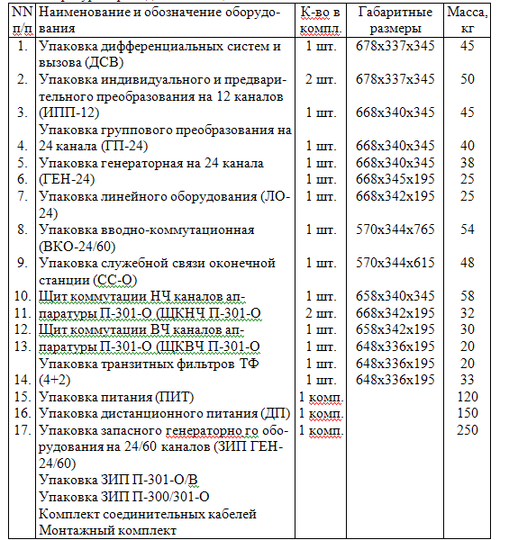

Тема №3. Устройство и эксплуатация систем передачи с частотным разделением каналов
Занятие №8. Аппаратура каналообразования П-301-О.
Учебные вопросы:
Литература:
- Многоканальные системы передачи, Ч.1. Теоретические основы построения МСП. – Мн.: БГУИР, 2010.
- Многоканальные системы передачи (часть 2). Учебно-методическое пособие «Аппаратура МКСП с ЧРК». – Мн.: БГУИР, 2010.
- Учебно-наглядное пособие «Альбом схем аппаратуры МКСП». – Мн.: БГУИР, 2010.
- Кирилов В.И. Учебное пособие «Многоканальные системы передачи»: – М.: Новое знание, 2003.
1. Назначение, состав и технические данные аппаратуры П-301-О.
Аппаратура П-301-О входит в состав системы П-301, предназначенной для уплотнения полевого кабеля П-296 24-я телефонными каналами. Схема работы аппаратуры - однокабельная 4-х проводная с Lмах = 1000км.
Магистраль системы П-301-О состоит из:
- оконечных станций -П-301-О;
- аппаратуры обслуживаемых усилительных пунктов (ОУП) - П-301-П;
- аппаратуры необслуживаемых усилительных пунктов (НУП) - П-301
- аппаратуры выделения каналов - П-301- В.
Оконечная аппаратура П-301-О обеспечивает:
- получение 24 тлф каналов с ЭППЧ 0,3-3,4 кГц;
- получение 4-х широких каналов (ШК-12) с ЭППЧ 12-24кГц вместо любых 4-х канальных групп;
- получение 2-х широких каналов (ШК-48) с ЭППЧ 60-108 кГц вместо двух 12-ти канальных групп;
- образование 2-х каналов широкого вещания (ШВ) с ЭППЧ 84-96 кГц вместо вторых 3-х канальных групп в каждой группе;
- передачу сигналов тонального телеграфирования, фототелеграфной связи и кодированной информации по 75% телефонных и широких каналов при условии средней загрузки на телефонный канал не более 135 мкВт.
Аппаратура позволяет организовать 4-проводный канал громкоговорящей служебной связи по магистрали.
Аппаратура П-301-О позволяет осуществить сопряжение трактов приема и передачи 12-канальных групп 60-108 кГц с соответствующими трактами других аппаратур уплотнения.
Для питания аппаратуры П-301-О используется переменный ток с частотой 50+2,5 Гц напряжением 220 В +10% (-20%) (от 176 до 242 В).
Мощность переменного тока, потребляемая аппаратурой с учетом питания трех НУП, не превышает 630 ВА, без дистанционного питания не более 450 ВА. Питание необслуживаемых усилительных пунктов (НУП) кабельной магистрали производится от выпрямленного стабилизированного тока. Величина тока дистанционного питания составляет 115 мА+6 мА (режим "П-300,301,302").
Рабочее напряжение дистанционного питания в зависимости от числа включенных НУП и длины усилительных участков составляет от 70 до 350 В.
В аппаратуре П-301-О предусмотрена общая звуковая и оптическая сигнализация, оповещающая обслуживающий персонал о неисправностях в устройствах питания, генераторном оборудовании, в устройствах АРУ и на магистрали.
Состав аппаратуры
Основное оборудование аппаратуры размещено в отдельных упаковках и щитах, соединенных кабелем, оканчивающимися с обоих концов 30-контактными ножевыми колодками, или вставками типа РМ. Вспомогательное оборудование включает в себя упаковку запасного генераторного оборудования ЗИП ГЕН-24/60, упаковку запасного линейного и преобразовательного оборудования ЗИП П-301-О/В, упаковку ЗИП П-300/301-О с комплектом запасных частей и инструмента.
Оборудование аппаратуры П-301-О рассчитано на размещение в стационарных помещениях и в аппаратной типа П-257-24К. Предусмотрен стационарный вариант аппаратуры.
Состав аппаратуры приведен в таблице:
Tехнические данные аппаратуры
Линейный спектр частот, на выходе аппаратуры, 12,3-107,7 кГц.
Входное сопротивление линейных трактов аппаратуры 135 Ом. Измерительный уровень передачи на выходе группового тракта аппаратуры минус 0,15 Нп.
Минимальные уровни на входе линейного тракта аппаратуры (при температуре плюс 5 градусов и длине усилительного участка 15 км) на частоте 12 кГц минус 3,03 Нп, на частоте 108 кГц - минус 5,11 Нп.
Линейное оборудование тракта приема аппаратуры П-301-О обеспечивает компенсацию затухания и коррекцию амплитудно-частотных искажений участка кабеля длиною от 0 до 15 км в рабочем диапазоне частот. Для контроля за состоянием магистрали в аппаратуре предусмотрены контрольные частоты 16, 64, 104 кГц.
Устройства автоматической регулировки усиления (АРУ) аппаратуры обеспечивают поддержание уровня тока контрольных частот с точностью +0,07 Нп относительно номинального при изменении уровней на входе аппаратуры не более чем на:
- +0,3 Нп для контрольной частоты 16 кГц;
- +0,1 Нп для контрольной частоты 64 кГц;
- +0,9 Нп для контрольной частоты 104 кГц.
С помощью контрольной частоты 104 кГц устройствами АРУ осуществляется плоская регулировка усиления, с помощью частоты 16 кГц - наклонная, с помощью частоты 64 кГц - криволинейная.
Аппаратура обеспечивает один из видов служебной связи в зависимости от режима работы:
- громкоговорящую двухстороннюю связь между оконечными станциями и обслуживаемыми усилительными пунктами (ОУП) в пределах одного переприемного участка. Эта связь осуществляется по НЧ каналу с шириной полосы частот от 300 до 2000 Гц по 4-проводной схеме. Вызов каждого пункта осуществляется голосом;
- громкоговорящую двухстороннюю связь оконечной аппаратуры с ближайшими ОУП и НУП в пределах секции регулирования.
Вызов соседнего ОУП осуществляется голосом, вызов НУП - током тональной частоты 900 Гц.
В аппаратуре предусмотрен телеконтроль за состоянием шести НУП в пределах прилегающего усилительного участка в одном направлении передачи. Вторым направлением можно контролировать НУП любой другой аппаратуры.
Каждый телефонный канал может быть использован в следующих режимах работы:
- 2-проводном оконечном 2ПР ОК;
- 2-проводном транзитном 2ПР ТР;
- 4-проводном оконечном 4ПР ОК;
- 4-проводном транзитном 4ПР ТР.
Режимы работы аппаратуры и каналов
Режимы работы аппаратуры
Аппаратура П-301-О работает по 1-кабельной схеме (режим "1-КАБ"). При работе аппаратуры в 1-кабельном режиме все перемычки на упаковке ВКО-24/60 устанавливаются в положение "1-КАБ". В этом режиме и тракт приема, и тракт передачи аппаратуры П-301-О проходят в упаковке ВКО-24/60 через вилки фильтров ДК-2-II. Тракт передачи аппаратуры П-301-О в 1-кабельном режиме оканчивается контактами с окантовкой вводной полумуфты "КАБ.2", тракт приема - контактами без окантовки той же полумуфты. При работе аппаратуры П-301-О предусмотрено предыскажение передаваемых в линию токов линейной полосы частот с разницей в затухании на крайней нижней частоте 12 кГц по отношению к крайней верхней частоте 108 кГц на 0,5 Нп (уровни соответственно плюс 0,1 Нп и минус 0,4 Нп на выходе аппаратуры). Для обеспечения предыскажения в тракт передачи включается контур наклона КПН 12-108. В тракте приема при этом включается восстанавливающий контур КВ 12-108, имеющий частотную характеристику, обратную характеристике контура наклона. При работе без предыскажения в тракт передачи вместо КПН 12-108 включается удлинитель 0,25 Нп, в тракт приема (вместо КВ 12-108) удлинитель 0,6 Нп. Линейные контрольные частоты в обоих случаях подаются в тракт передачи без изменения уровня.
Режимы и транзитные соединения каналов
В аппаратуре предусмотрены 4 и 2-проводный оконечный и транзитный режимы телефонных каналов.
При оконечном 4-проводном режиме перемычки на ЩКНЧ устанавливаются в положение "ОК".
При 2-проводном режиме подключение дифференциальных систем к трактам канала производится шнурами. Перемычки на упаковке ДСВ при 2-проводном оконечном режиме устанавливаются в положение "ОК" (выключается транзитный удлинитель).
При 4-проводном транзитном режиме на входе тракта передачи канала включается удлинитель 2,0 Нп и на кросс подаются тракты с уровнем сигнала по передачи и по приему плюс 0,5 Нп.
4-проводный транзитный режим образуется установкой перемычки в гнездах "ТР.УДЛ" канала в положение "ТР". При непосредственном транзитном соединении (кабелем) каналов двух аппаратур (без кросса) имеется возможность перекрестить транзитно соединяемые тракты каналов. Для этого на одной из аппаратур перемычку из положения "ОК" необходимо переставить в положение "ТР.(Х)".
При 2-проводном транзитном режиме удлинитель 0,4 Нп выключается из тракта (перемычка на упаковке ДСВ устанавливается в положение "ТР". Уровни сигнала в сторону приема и передачи равны 0,4 Нп.
В аппаратуре предусмотрено образование широкого канала ШК-12 с полосой частот 12,3-23,4 кГц. Широкий канал образуется путем отключения каналообразующего оборудования (блок МД-3) на три канала в точке с измерительным уровнем минус 4,0 Нп в тракте передачи и минус 1,6 Нп в тракте приема и подключением его к тракту приема и передачи 3-канальной группы полутранзитных полосовых фильтров ФПТ 12-24 Пер и ФПТ 12-24 Пр., которые при каскадном соединении образуют полный транзитный фильтр ФПТ 12-24. Коммутация осуществляется путем перестановки перемычек, установленных в тракте приема и передачи соответствующей 3-канальной группы на упаковке ИПП-12, из положения "ТФ" в положение "ШК", в результате чего тракты приема и передачи 3-канальной группы подаются из гнезда "ГР" щита ЩКВЧ. Оборудование аппаратуры позволяет получить четыре широких канала ШК-12. Учитывая наличие восьми 3-канальных групп, гнезда коммутации каналов ШК-12 объединены в комплекты. В каждый из комплектов входят гнезда, к которым подключены цепи трактов передачи и приема двух 3-канальных групп (например, гнезда с гравировкой "1ГР" и "2ГР") и одного фильтра ФПТ 12-24 Пер и Пр (например, гнезда с гравировкой "1ФШК" с общей гравировкой "ШК-12" "ПЕРЕДАЧА" и "ПРИЕМ"). Коммутация в комплекте производится перемычкой и позволяет соединить вход или выход любой из двух групп с выходом или входом одного ФПТ 12-24, закрепленного за комплектом. Коммутация между гнездами разных комплектов может быть произведена шнурами. Для передачи трактов широких каналов ШК-12 на кросс узла связи входы (в тракте передачи) и выходы (в тракте приема) с 1 по 4-й фильтр (гнезда "1ШК", "2ШК" и т.д.) соединяются с гнездами ("1СЛ", "2СЛ" и т.д.) перемычками.
Широкий канал ШК-48 образуется путем отключения оборудования индивидуального и предварительного преобразования на 12 каналов (упаковка ИПП-12) в точке с измерительным уровнем минус 4,5 Нп в тракте передачи и минус 0,6 Нп в тракте приема, подключением полосового транзитного фильтра (ФПТ 60-108) в тракте передачи и подачей образованных таким образом трактов широкого канала на выход аппаратуры. Для образования широкого канала ШК-48 используется полоса частот 12-канальной первичной группы 60,6-107,7 кГц. Оборудование аппаратуры позволяет получить два широких канала ШК-48. Гнезда коммутации каналов ШК-48 объединены на ЩКВЧ в комплекты. В каждый из комплектов входят гнезда, к которым подключены цепи трактов передачи и приема одной 12-канальной группы ("1ГР" или "2ГР") и двух широких каналов ШК-48 (соответственно "1ФШК" или "2ФШК" с общей гравировкой "ШК-48" "ПЕРЕДАЧА" и "1ШК" или "2ШК" с общей гравировкой "ШК-48" "ПРИЕМ"). Соединение этих гнезд в комплекте производится перемычкой. Для передачи трактов широких каналов ШК-48 на кросс узла связи входы (в тракте передачи) фильтров ФПТ 60-108 и цепи трактов приема 1 и 2-го каналов ШК-48 (гнезда "1ШК" и "2ШК") соединяются перемычками с гнездами "1СЛ" и "2СЛ" соответственно. Вводные разъемы ШК-48 используются также и для соединения трактов 12-канальных групп аппаратуры П-301-О с соответствующими трактами других аппаратур уплотнения при их сопряжении. Из-за различия уровней передачи и приема 12-канальных групп аппаратуры П-301-О (минус 4,5 Нп и минус 0,6 Нп соответственно) и других аппаратур уплотнения (минус 4,1 Нп или минус 4,2 Нп и минус 2,6 Нп или минус 3,5 Нп), в сопрягающиеся тракты путем перепаек на платах с удлинителями, расположенных на внутренней стороне коммутационного поля щита ЩКВЧ, включаются согласующие устройства (СУ). Аппаратура имеет два комплекта согласующих устройств.
В случае работы аппаратуры П-301-О в оконечном режиме (передача трактов упаковки ИПП-12 к другой аппаратуре), в тракт приема включается согласующие удлинитель и усилитель. В этом случае коммутация осуществляется шнурами, включаемыми в гнезда "ТЛФ" и "СЛ" под гравировками "ПЕРЕДАЧА" и "ПРИЕМ" (под общей гравировкой "ШК-48" щита ЩКВЧ).
При транзитном соединении трактов 60-108 кГц аппаратуры П-301-О и другой аппаратуры в тракты приема включается согласующий удлинитель, в тракт передачи - усилитель и удлинители. Коммутация в этом случае аналогична коммутации широких каналов ШК-48, ввиду использования собственного транзитного фильтра ФПТ 60-108 кГц аппаратуры П-301-О.
ЭЛЕКТРОПИТАНИЕ И СИГНАЛИЗАЦИЯ
Питание аппаратуры
Питание аппаратуры П-301-О осуществляется от следующих источников выпрямленного тока:
- выпрямителя в упаковке питания ПИТ;
- выпрямителя в блоке питания ПИТ.ДСВ упаковки ДСВ;
- выпрямителя в блоке питания ПИТ.ЛО упаковки СС-О.
Выпрямитель в упаковке питания обеспечивает получение постоянного тока напряжением 19+0,2 В с напряжением пульсации не превышающим 1,0 мВ, для питания преобразовательного и генераторного оборудования аппаратуры в упаковках ИПП-12, ГП-24, ГЕН-24, а также блоков, размещенных на щите ЩКНЧ.
В упаковке ПИТ имеется отдельный выпрямитель, который создает пульсирующий ток напряжением 24 В для питания цепей сигнализации, источник переменного тока напряжением 28 В для питания термостата задающего генератора, источник переменного тока напряжением 80 В для посылки индукторного вызова по служебным линиям и телефонным каналам с 2-проводного ПВУ.
Выпрямитель в упаковке ДСВ обеспечивает получение постоянного тока напряжением 19+0,6 В для питания вызывных устройств, расположенных в этой упаковке. Кроме того, в блоке питания ПИТ.ДСВ создается напряжение 80 В для цепей посылки индукторного вызова по каналам (в сторону коммутатора).
Выпрямитель в блоке ПИТ.ЛО упаковки СС-О создает выпрямленный ток напряжением 22+0,7 В с напряжением пульсации не более 5 мВ для питания линейного оборудования и устройств служебной связи в упаковках ЛО-24 и СС-О. Кроме того, в блоке ПИТ.ЛО от отдельного выпрямителя получается постоянный ток напряжением 24 В для питания цепей сигнализации в этих упаковках.
Для дистанционного питания НУП кабельной магистрали в аппаратуре имеется питающее выпрямительное устройство, расположенное в отдельной упаковке дистанционного питания (ДП). Питающее устройство рассчитано на питание трех НУП. Упаковка ДП обеспечивает подачу в кабельную магистраль стабилизированного постоянного тока величиной 115 мА (режим П-300,301,302) с пульсацией напряжения, не превышающей 0,5 В.
Рабочее напряжение дистанционного питания на выходе в линию составляет от 70 до 370 В в зависимости от числа включенных НУП и длины усилительных участков.
Все перечисленные питающие устройства работают от переменного тока напряжением 220 В и частотой 50 Гц, который подается от внешнего источника через блок распределения питания. При этом цепь переменного напряжения 220 В подается по отдельному соединительному кабелю на упаковку ПИТ для питания выпрямителя. С упаковки ПИТ отдельным кабелем цепь ~220 В подается на упаковку СС-О, а затем с упаковки СС-О на упаковку ДП.
Выпрямленное напряжение 19 В с упаковки ПИТ подается по соединительному кабелю на упаковку ГЕН-24, а от нее на упаковки ГП-24 и ИПП-12. С упаковки ПИТ напряжение 19 В подается также на щит ЩКНЧ П-301-О для питания блоков ПВУ и УУ.
Выпрямленное напряжение 22 В с упаковки СС-О подается по соединительному кабелю на упаковки ЛО-24 и ВКО-24/60.
Аппаратура не рассчитана на резервное питание от источника постоянного тока, за исключением устройств служебной связи магистрали, расположенных в блоке СС-О одноименной упаковки.
Резервное питание этих устройств в случае аварии (отсутствие переменного напряжения 220 В) может обеспечиаваться от аккумуляторной батареи напряжением 12 В, включенной через преобразователь постоянного напряжения ПНС-12/22, который повышает напряжение до 22 В. Преобразователь ПНС-12/22 в состав аппаратуры П-301-О не входит. Переключение с цепи основного источника (выпрямителя блока ПИТ.ЛО, находящегося в упаковке СС-О) на резервный производится автоматически. Так как устройство автоматического переключения находится в преобразователе ПНС-12/22, цепь питания блока СС-О от основного источника проходит через преобразователь. Резервное питание устройств служебной связи предусмотрено с целью обеспечения возможности ведения служебных переговоров по магистрали при выходе из строя оконечной аппаратуры вследствие пропадания переменного напряжения 220 В, подаваемого от электростанции.
Для установки режимов питания блока СС-О с обособленным резервным питанием или без него, на блоке имеется тумблер "ПИТ" на два положения: "МЕСТ" и "ВН".
Сигнализация
Устройства общей (звуковой и оптической) и местной (оптической) сигнализации аппаратуры П-301-О обеспечивают оповещение обслуживающего персонала о следующих видах неисправностей:
- пропадание напряжения источников питания и перегорание распределительных предохранителей, кроме предохранителя "~80В" на блоках ПИТ;
- пропадание уровней несущих и контрольных частот на выходе генераторного оборудования;
- неисправность системы дистанционного питания;
- пропадание линейных контрольных частот и нарушение работы устройства АРУ.
В случае возникновения неисправности любого вида, кроме местной сигнализации, указывающей характер неисправности в помощью сигнальной лампы под соответствующей гравировкой, работают устройства общей сигнализации (ОС): звонит звонок и горит общесигнальная лампа "АВ" на щите ЩКНЧ. Предусмотрено выключение звонка нажатием кнопки "ВЫКЛ.ЗВ". При этом лампа "АВ" горит до устранения неисправности.
Устройства общей сигнализации обеспечивают также повторную работу звонка при возникновении еще одной неисправности тогда, когда предыдущая неисправность еще не устранена.
Это возможно только в том случае, если появившаяся неисправность другого вида.
Пропадание напряжения источников питания минус 19 В (в упаковке ПИТ. или в блоке ПИТ.ДСВ) и минус 22 В (в блоке ПИТ.ЛО), вызванное любой причиной (перегорание предохранителей, неисправность схемы выпрямителя и т.д.), вызывает срабатывание реле, с контактов которого подается плюс 24 В на лампу местной сигнализации под соответствующей гравировкой и, через диод, в схему ОС на ЩКНЧ. В зависимости от того, напряжение какого источника отсутствует, загорается лампа "-19В" (или "-22В") на соответствующем блоке и срабатывает ОС. Пропадание напряжения минус 24 В (для питания цепей сигнализации) в упаковке ПИТ вызовет срабатывание только местной сигнализации - лампа "-24В". Питание этой лампы производится от источника напряжением 19 .
Перегорание предохранителей в цепи подачи переменного напряжения 220 В в блоке ПИТ.ЛО или ПИТ.ДСВ вызывает пропадание свечения неоновых ламп и срабатывание ОС. При аналогичной неисправности в блоке ПИТ гаснет лампа "ВКЛ".
При перегорании распределительных предохранителей в цепях минус 19 В и минус 24 В в упаковке ГЕН-24 загораются лампы местной сигнализации, а в цепи ОС через диод подается плюс 24 В.
В случае перегорания предохранителей на упаковке ИПП-12 и щите ЩКНЧ работает только местная (оптическая) сигнализация.
При пропадании уровней токов несущих и контрольных частот на выходе генераторного оборудования упаковки ГЕН-24 срабатывают реле, установленные на выходе усилителей НЧ и КЧ. С контактов реле подается плюс 24 В на лампы местнаой сигнализации и на диод в ЩКНЧ. При этом загораются лампы под гравировками, соответствующими значению частоты, и срабатывает система ОС.
Особенностью построения схемы генераторного оборудования является то, что ряд частот получается непосредственно от общих узлов (ДЧ, ГГ), а часть - от других частот путем преобразования.
Схема сигнализации неисправностей в генераторном оборудовании построена таким образом, что сигнал аварии появляется лишь в том блоке, в котором фактически произошло повреждение, в двух случаях горят две или три лампы в разных блоках.
Местная и общая сигнализация оповещают о следующих неисправностях в упаковке ДП: увеличении тока ДП на 13-18% и более, обрыве цепи ДП, перегорании предохранителей в цепи переменного напряжения 220 В. Увеличение тока на 13-18% и более вызывает срабатывание реле, контакты которого создают цепь питания лампы "МАКС.ТОК ДП". Горят лампы "МАКС.ТОК ДП", АВ" на упаковке ДП и срабатывает ОС. При обрыве цепи ДП срабатывает реле, которое выключает напряжение ДП. Горит лампа "АВ" на упаковке ДП, на ЩКНЧ подается плюс 24 В в цепь ОС.
Резкое изменение уровня линейных контрольных частот 16 и 64 кГц, а также полное их пропадание вызывает срабатывание реле блокировки, которые расположены в блоках ПКК-64 и ПКК-104/16 упаковки ЛО-24. Контакты этих реле замыкают цепь питания ламп "АВ" на блоках ПКК-104/16 и ПКК-64 и подают плюс 24 В в цепь ОС. При исчерпании пределов регулировки АРУ срабатывает реле сигнализации, контакты которого подают плюс 24 В на ОС и на лампу "ПРЕД" в блоке ПКК-104/16 упаковки ЛО-24. При срабатывании системы ОС предусмотрена подача плюс 24 В на выходе аппаратуры, и далее - на общеузловой пульт сигнализации.
2. Схема частотных преобразований аппаратуры П-301-О.
План частот линейного тракта
Аппаратура П-301-О работает по принципу частотного уплотнения по схеме группообразования. Перенос частотных спектров разговорных токов телефонных каналов (0,3-3,4 кГц) в линейный спектр частот (12,3-107,7 кГц) в тракте передачи производится с помощью четырех ступеней преобразования: индивидуальной, предварительной, первичной и групповой.
Индивидуальное преобразование производится с помощью несущих частот 12, 16 и 20 кГц и при использовании верхней боковой полосы, в результате чего образуется 3-канальная группа с полосой частот 12,3-23,4 кГц. Токи четырех 3-канальных групп посредством ступени предварительного преобразования в тракте передачи с помощью несущих частот 84, 96, 108 и 120 кГц и при использовании нижней боковой полосы частот образуют основную 12-канальную группу с полосой частот 60,6-107,7 кГц. Токи полосы частот 60,6-107,7 кГц каждой 12-канальной группы посредством первичного преобразования при взаимодействии с одной из первичных несущих частот 444 или 564 кГц, в зависимости от номера группы, и при использовании верхней и нижней боковой полосы преобразуются в токи с общей полосой частот 456,3-551,7 кГц. При этом токи частот первой 12-канальной группы преобразуются в токи полосы частот 456,3-503,4 кГц с использованием нижней боковой полосы частот, второй группы - в токи полосы частот 504,6-551,7 кГц с использованием верхней боковой полосы частот.
Затем токи полосы частот 456,3-551,7 кГц переносятся посредством групповой ступени преобразования с помощью несущей частоты 564 кГц в линейный спектр 12,3-107,7 кГц. В тракте приема осуществляется обратное преобразование.
3. Структурная схема аппаратуры П-301-О.
Состав, назначение и работа тракта передачи П-301-О
Индивидуальное оборудование
Разговорные токи со стороны кросса при 2-проводном режиме работы телефонного канала со щита ЩКНЧ П-301-О (гнезда "2-ПР" "1ДС" и "1СЛ" "ПР" "ТЛФ КАНАЛЫ" щита ЩКНЧ соединены шнуром) поступают на вход блока ДСВ-3 упаковки ДСВ на удлинитель с затуханием 0,4 Нп. Этот удлинитель предназначен для обеспечения необходимого уровня в канале при работе его в оконечном режиме. При работе канала в режиме 2-проводного транзитного соединения этот удлинитель выключается посредством перестановки перемычки из положения "ОК" в положение "ТР".
Далее разговорные токи поступают на дифференциальную систему ДС, с помощью которой осуществляется переход с 2-проводной на 4-проводную схему канала. В передающем тракте дифсистемы включен ограничитель амплитуд, который предотвращает перегрузку телефонного канала. Включенный в тракт передачи удлинитель с затуханием 0,4 Нп является эквивалентом затухания соединительной линии, по которой цепи ДС подаются к аппаратуре при размещении упаковки ДСВ на удалении от аппаратуры. Компенсация затухания соединительной линии осуществляется путем выключения удлинителя с помощью перепайки на его контактах.
С выхода блока ДСВ-3 упаковки ДСВ в тракте передачи канала разговорные токи поступают на щит, проходят шнур, соединяющий гнездо "ПЕР" "КАН.1" под общей гравировкой "ДС" и гнездо "ПЕР" "КАН.1" под гравировкой "ТЛФ КАНАЛЫ", удлинитель 2 Нп, предназначенный для обеспечения необходимого уровня при работе канала в режиме 4-проводного транзита. В оконечном режиме он выключен перестановкой перемычки из положения "ТР" в положение "ОК".
Со щита разговорные токи поступают на упаковку индивидуального и предварительного преобразования (ИПП-12). Измерительный уровень сигнала на входе канала в упаковке ИПП-12 равен минус 1,5 Нп, входное сопротивление канала 600 Ом. При 4-проводном режиме работы канала токи на вход канала в упаковку ИПП-12 подаются непосредственно со щита ЩКНЧ через перемычку, установленную в гнезда "СЛ" "ПЕР" и "ПЕР" "КАН.1" под общей гравировкой "ОК".
В тракте передачи каждого канала включен индивидуальный преобразователь (ПИ), в котором происходит преобразование разговорных токов с помощью несущих частот 12, 16 и 20 кГц в токи частот 3-канальной группы 12,3-23,4 кГц. На входе каждого преобразователя ПИ включен удлинитель с затуханием 1+0,2 Нп, который служит для снижения уровня преобразуемого сигнала до значения, обеспечивающего нормальную работу преобразователя, а также для обеспечения входного сопротивления тракта передачи канала. Кроме того, с помощью этого удлинителя обеспечивается регулировка уровня в тракте передачи канала в пределах +0,2 Нп с точночтью 0,05 Нп. На выходе преобразователя включен полосовой фильтр ФК-1 (ФК-2, ФК-3), служащий для подавления неиспользуемой нижней боковой полосы частот и остатка несущей частоты и выделения верхней боковой полосы частот. Удлинитель с затуханием 0,3 Нп обеспечивает необходимый уровень сигнала минус 4,0 Нп на входе преобразователя ПГ.
Токи каждой 3-канальной группы, пройдя через перемычки на упаковке ИПП-12, установленные в положение "ТФ", поступают на преобразователи ПГ, в которых с помощью несущих частот 84, 96, 108 и 120 кГц происходит преобразование токов полосы частот 12,3-23,4 кГц в токи частот основной 12-канальной группы 60,6-107,7 кГц. Полосовые фильтры (ФП-1, ФП-2, ФП-3 и ФП-4) применяются для выделения токов нижней боковой полосы частот на выходе преобразователей ПГ и подавления токов несущих частот, верхней боковой полосы частот и прочих продуктов преобразования. Включение фильтров ФП в общий тракт осуществляется с помощью дифсистемы (ДС), обеспечивающей развязку фильтров, соседних по полосе пропускания.
Токи 12-канальной группы поступают на вход усилителя Ус.60-108, который обеспечивает необходимый измерительный уровень по мощности минус 4,5 Нп на выходе передающей части упаковки ИПП-12. После усилителя Ус.60-108 токи 12-канальной группы поступают на заграждающий фильтр ФЗ-84,14, который включен для защиты контрольного канала 84,14 кГц от мешающего воздействия разговорных токов. Фильтр ФЗ-84,14 подавляет также ток контрольной частоты 84,14 кГц, который попадает с тракта приема другой аппаратуры при транзитных соединениях по широким каналам ШК-12 и может оказать влияние на уровень контрольной частоты 84,14 кГц на выходе аппаратуры. Далее токи поступают на дифсистему ДС-1, которая вместе с дифсистемой ДСК, предназначена для ввода в тракт передачи контрольной проверочной частоты 84,14 кГц и подключения канала широкого вещания. Включенный после дифсистемы ДС-1 удлинитель с затуханием 0,3 Нп предназначен для обеспечения измерительного уровня минус 4,5 Нп на выходе тракта передачи упаковки ИПП-12. Контрольная частота 84,14 кГц в тракт передачи подается с уровнем на 2,9 Нп ниже измерительного уровня сигнала и предназначена для контроля диаграммы уровней в трактах передачи и приема 60-108 кГц.
С выхода каждой упаковки ИПП-12 токи 12-канальной группы поступают через перемычку "ВЫХ.60-108" на щит ЩКВЧ, с которого, пройдля через перемычку, соединяющую гнезда "ТЛФ" и "ГР" с соответствующим номером и общей гравировкой "ШК-48" "ПЕР", поступают на симметрирующий трансформатор, расположенный в упаковке группового преобразования ГП-24.
Групповое оборудование
На входе каждого группового тракта установлен согласовывающий трансформатор 135/135 для перехода с уравновешенной схемы тракта на неуравновешенную. Далее токи поступают на фильтр Д-125, предназначенный для подавления остатков токов несущих частот первичного преобразования, которые, просачиваясь на вход тракта, оказывают влияние на результаты измерения, и для подавления токов полосы частот 948-1068 кГц, которые при наличии их на входе тракта могут создать после преобразования токи помех, лежащие в рабочей полосе частот первичной группы. Поступая далее на первичный преобразователь (ПП), токи полосы частот каждой группы 60,6-107,7 кГц с помощью несущих частот 564 кГц в 1-й группе и 444 кГц во 2-й группе и полосовых фильтров первичных групп (ФППГ-4 и ФППГ-5) преобразуются в токи полос частот 456,3-503,4 кГц и 504,6-551,7 кГц соответственно.
Полосовые фильтры ФППГ-4 и ФППГ-5 выделяют токи рабочей полосы частот (ФППГ-4 - нижней и ФППГ-5 - верхней боковой полосы частот) и обеспечивают подавление всех остальных продуктов преобразования, в том числе токов другой боковой полосы частот и тока несущей частоты в тракте передачи каждой первичной группы. Удлинители на входе и выходе первичного преобразователя включены для согласования входных сопротивлений преобразователя с фильтрами Д-125 и ФППГ. Удлинитель на выходе первичного преобразователя является переменным. С помощью этого удлинителя обеспечивается регулировка уровня в тракте передачи первичных групп в пределах от 0,3 до 0,55 Нп ступенями по 0705 Нп. Изменение величины затухания удлинителя обеспечивается перепайками.
Усилитель Ус.Пер.312-552 усиливает токи полос частот 456,3-503,4 кГц и 504,6-551,7 кГц и повышает уровень в тракте передачи, что обеспечивает высокую помехозащищенность. Кроме того, наличие усилителя улучшает параллельную работу трактов двух первичных групп, объединение которых в общий групповой тракт производится в дифференциальной системе (ДС).
С выхода дифсистемы ДС токи обеих групп с полосой частот 456,3-551,7 кГц поступают на групповой преобразователь (ПГ-24). В результате взаимодействия этих токов с током групповой несущей частоты 564 кГц и подавления ненужных продуктов преобразования фильтром Д-125 происходит образование токов линейной полосы частот 12,3-107,7 кГц. Входное сопротивление преобразователя ПГ-24 равно 75 Ом, выходное - 135 Ом. На входе и выходе преобразователя ПГ-24 включены удлинители для согласования входного и выходного сопротивлений преобразователя ПГ-24 с входным сопротивлением ДС и фильтра Д-125.
Токи полосы частот 12,3-107,7 кГц поступают далее на вход вспомогательного усилителя Ус.12-108. Этот усилитель обеспечивает усиление токов, ослабленных в результате преобразования, вследствие чего повышается помехозащищенность в групповом тракте.
С выхода вспомогательного усилителя токи поступают на последовательно включенные заграждающие фильтры ФЗ-16 и ФЗ-64; 104, которые предназначены для подавления остатка токов индивидуальных несущих частот и разговорных токов, совпадающих в линейном тракте по частоте с токами линейных контрольных частот 16, 64 и 104 кГц. При транзитном соединении по 12-канальным группам 60-108 кГц или 3-канальным группам 12-24 кГц эти заграждающие фильтры совместно с аналогичными фильтрами, установленными в групповом тракте приема, обеспечивают, кроме того, требуемую защищенность от токов линейных контрольных частот другой аппаратуры.
В аппаратуре П-301-О предусмотрены два режима работы: с предыскажением и без предыскажения выходного уровня. При работе с предыскажением в тракт включается контур предварительного наклона (КПН 12-108), который имеет частотную характеристику, обеспечивающую разницу в затухании на крайней нижней частоте 12 кГц по отношению к крайней верхней частоте 108 кГц на 0,5 Нп. Снижение затухания на верхних частотах частично компенсирует амплитудно-частотные искажения, вносимые кабельной линией и улучшает соотношение "сигнал-помеха" во всем передаваемом диапазоне частот. При работе без предыскажения в тракт вместо контура КПН включен удлинитель с затуханием 0,25 Нп.
С выхода удлинителя или контура КПН токи поступают на усилитель передачи Ус.Пер., обеспечивающий необходимый измерительный уровень на выходе группового тракта передачи, равный минус 0,15 Нп. При включении контура КПН на выходе группового тракта уровень токов нижних частот полосы равен минус 0,4 Нп, верхних частот плюч 0,1 Нп. На входе усилителя передачи включен неравноплечий дифференциальный трансформатор, на один вход которого поступают токи линейной полосы частот, на другой - через регуляторы контрольных частот (РКЧ), выведенные на лицевую панель блока ГП Пер. - токи линейных контрольных частот 16, 64 и 104 кГц.
Токи линейных контрольных частот предназначены для контроля за состоянием линейного тракта магистрали и управления устройствами регулирования во всем диапазоне частот.
Токи линейных контрольных частот подаются от генераторного оборудования с уровнем минус 2,0 Нп, а на входе усилителя передачи их уровень с помощью регулятора РКЧ снижается до такой величины, чтобы в групповом тракте уровень тока каждой частоты был на 2 Нп ниже номинального измерительного уровня сигнала без учета предыскажения. Токи контрольных частот могут выключаться из тракта с помощью 2-контактных перемычек, которые вынимаются из гнезд с гравировкой "16", "64" и "104".
С выхода усилителя передачи, пройдя перемычку, установленную в положении "ВЫХ", с упаковки ГП-24 токи поступают на упаковку ВКО-24/60, на входные цепи тракта передачи.
Токи проходят 8-контактную перемычку "1-КАБ" под общей гравировкой "РЕЖИМ РАБОТЫ". Далее токи поступают на трансформатор Тр4 и фильтр К-2-II, затем на линейный трансформатор Тр1, проходят перемычку, установленную в гнезда "СТ" и "КАБ", поступают на вводную полумуфту упаковки ВКО-24/60 с гравировкой "КАБ.2" на контакты с окантовкой. Линейный трансформатор Тр1 служит для согласования входного сопротивления кабеля со входным сопротивлением вилки фильтров ДК-2-II, равным 600 Ом. Кроме того, в среднюю точку линейной обмотки трансформатора Тр1 через перемычку "ДП" может вводиться один полюс цепи дистанционного питания (+ДП). Второй полюс дистанционного питания (-ДП) вводится в среднюю точку линейного трансформатора Тр2 через пермычку, установленную в гнезда "ДП". Фильтры ДК-2-II служат для разделения трактов передачи аппаратуры и служебного канала постанционной связи. Трансформатор Тр4 согласовывает 600-омное сопротивление фильтра К-2-II со 135-омным входным сопротивлением линейного тракта аппаратуры.
Состав, назначение и работа тракта приема П-301-О
Групповое оборудование
Токи полосы частот 12,3-107,7 кГц с кабельной магистрали поступают на контакты без окантовки вводной полумуфты упаковки ВКО-24/60 с гравировкой "КАБ.2". С контактов полумуфты токи через перемычку, соединяющую гнезда "СТ.-КАБ" с общей гравировкой "1-КАБ", поступают на трансформатор Тр2, служащий для согласования выходного сопротивления кабеля с входным сопротивление линейного тракта аппаратуры. Далее токи проходят фильтрв К-2-II, трансформатор Тр5 восьмиконтактную перемычку, установленную в положение "1-КАБ", контур КДН (или минуя его) и с выхода упаковки ВКО-24/60 на упаковку ЛО-24, где попадают на фильтр Д-108, ограничивающий полосу частот и подавляющий токи помех, которые могут поступать с магистрали.
С выхода фильтра Д-108 токи поступают на искусственные линии. Эти линии по своим частотным характеристикам являются эквивалентами участков кабельной магистрали соответствующей длины и служит для дополнения реальной длины кабельного участка до максимальной (15 км). С выхода искусственной линий токи поступают на вход усилительного элемента, состоящего из амплитудного выравнивателя (ВА-24), линейного усилителя Ус.Л-24 и устройства автоматической регулировки усиления АРУП с дополнительной цепью (ДЦ). Амплитудный выравниватель предназначен для компенсации искажений, вносимых участком кабеля длиной 15 км при температуре плюс 5 градусов. Устройство АРУП, подключенное к Ус.Л-24, выполняет финкции плоского регулятора усиления. В случае необходимости, автоматическая плоская регулировка усиления в Ус.Л-24 может быть заменена ручной (регулятор с гравировкой "РП1").
С выхода Ус.Л-24 токи полосы частот 12,3-107,7 кГц поступают на косикусный корректор КК-24, предназначенный для ручной коррекции линейного тракта. С выхода КК-24 токи попадают на контур ручной криволинейной регулировки ККР-24, который предназначен для коррекции неравномерности частотной характеристики, вносимой магистралью. Далее токи поступают на контур автоматической "криволинейной" регулировки АРУК, с помощью которого осуществляется автоматическая коррекция неравномерности частотной характеристики, вносимой магистралью.
Включенный на выходе АРУК фильтр К-6 служит для подавления токов контрольных частот НУП, предотвращая их попадание в тракт приема.
Затем токи полосы частот 12,3-107,7 кГц поступают на усилитель Ус.24 с цепью автоматической наклонной регулировки усиления АРУН, обеспечивающий необходимую мощность токов на выходе упаковки ЛО-24. С выхода Ус-24 полностью откорректированные токи с уровнем минус 0,15 Нп поступают на упаковку ГП-24.
С выхода Ус-24 токи поступают также к высокоомным входам приемников контрольных каналов ПКК-64 и ПКК-104/16, которые предназначены для управления устройствами автоматической регулировки усиления линейных усилителей в соответствии с изменениями затухания участка кабельной линии. С помощью контрольной частоты 104 кГц осуществляется плоская, не зависящая от частоты, регулировка усиления, с помощью контрольной частоты 16 кГц - наклонная регулировка, пропорциональная изменению частоты передаваемых сигналов, а с помощью контрольной частоты 64 кГц - криволинейная регулировка усиления. К выходу Ус.Л-24 подключено устройство для дистанционного контроля неисправности НУП и определения номера неисправности НУП или поврежденного участка кабельной магистрали.
С выхода упаковки ЛО-24 токи полосы частот 12-108 кГц поступают на упаковку ГП-24, проходят перемычку "ВХ" и поступают на симметрирующий трансформатор (СТ), служащий для перехода с уравновешенной схемы линейного тракта оборудования на неуравновешенную схему группового тракта приема. Удлинитель с затуханием 1,45 Нп понижает уровень токов с целью облегчения условий работы восстанавливающего контура КВ 12-108 и заграждающих фильтров с точки зрения обеспечения требуемой нелинейности, а также для получения необходимой диаграммы уровней в тракте. Затем токи поступают на удлинитель с затуханием 0,6 Нп. Удлинитель включен в случае работы без предыскажения уровней. При работе с предыскажением вместо удлинителя включается восстанавливающий контур КВ 12-108, который имеет частотную характеристику обратную характеристике контура КПН 12-108 и обеспечивает на выходе одинаковое значение уровня во всем диапазоне частот 12-108 кГц. Включенные далее заграждающие фильтры ФЗ-16 и ФЗ-64; 104 предназначены для подавления токов линейных контрольных частот и обеспечения, совместно с такими же фильтрами в тракте передачи требуемой защищенности между токами линейных контрольных частот различных аппаратур при транзитном соединении по широким каналам. Удлинитель с затуханием 1,3 Нп, включенный на входе фильтра Д-125, снижает до требуемой величины уровень токов, поступающих на вход группового преобразователя (ПГ-24), а также обеспечивает лучшее согласование фильтра ФЗ-64; 104 с фильтром Д-125.
Фильтр Д-125 обеспечивает подавление поступающих с линии помех в полосе частот 456-552 кГц, которые могут, пройдя без преобразования через групповой преобразователь, попасть в рабочую полосу группового тракта 456,3-551,7 кГц. Кроме этого, фильтр Д-125 подавляет помехи с линии, совпадающие по частоте с непередаваемой верхней боковой полосой частот 1020,3-1115,7 кГц, которые после преобразования в групповом преобразователе могут также создать помеху в рабочей полосе частот группового тракта 456,3-551,7 кГц.
С выхода фильтра Д-125 токи линейной полосы частот поступают на групповой преобразователь приема (ПГ-24). В результате преобразования этих токов с помощью несущей частоты 564 кГц в преобразователе и подавления ненужный продуктов преобразования фильтром Д-552 происходит образование токов частот двух 12-канальных груу в полосе частот 456,3-551,7 кГц. Удлинители с затуханием 0,2 Нп и 0,35-0,5 Нп на входе и выходе группового преобразования включены для согласования его входных сопротивлений с фильтрами Д-125 и Д-552.
Усилитель Ус.Пр.312-552 обеспечивает усиление токов, ослабленных в результате преобразования и тем самым создает необходимую диаграмму уровней в групповом тракте приема. С выхода усилителя приема токи с измерительным уровнем минус 2,6 Нп поступают на удлинитель с затуханием 0,8 Нп и далее на оборудование первичного преобразования. Дифсистема ДС обеспечивает параллельную работу фильтров ФППГ-4 и ФППГ-5, а также переход с 75-омного сопротивления группового тракта приема на 135-омное входное сопротивление трактов первичных групп. Полосовые фильтры ФППГ-4 и ФППГ-5 выделяют из общей полосы частот 456,3-551,7 кГц полосы частот отдельных первичных групп: 456,3-503,4 кГц и 504,6-551,7 кГц соответственно.
С выхода полосовых фильтров токи каждой первичной группы поступают на первичный преобразователь (ПП), где с помощью несущих частот 564 и 444 кГц преобразуются в токи основной 12-канальной группы 60,6-107,7 кГц. Удлинители, включенные на входе и выходе первичного преобразователя, обеспечивают согласование входных сопротивлений его с фильтрами ФППГ и Д-125. Удлинитель на входе преобразователя является переменным и служит, кроме того, для регулировки измерительного уровня в тракте приема первичной группы в пределах от 0,3 до 0,55 Нп ступенями по 0,05 Нп. Изменение величины затухания удлинителя обеспечивается перепайкой.
На выходе ПП включены фильтры Д-125, которые пропускают токи нижней боковой полосы частот 60-108 кГц, подавляют токи верхней боковой полосы частот, и токи других продуктов преобразования, в том числе токи несущей частоты.
На выходе тракта приема каждой первичной группы для обеспечения необходимого уровня (минус 0,6 Нп) на входе индивидуального оборудования установлен усилитель Ус.60-108. В усилителе Ус.60-108 предусмотрены корректирующие контуры с помощью которых осуществляется выравниванием амплитудно-частотных искажений, вносимых узлами трактов первичной группы в полосе частот 60-108 кГц, до 0,15 Нп на верхних граничных частотах и до 0,2 Нп на нижних граничных частотах. Регулировка осуществляется перепайкой ступенями по 0,05 Нп. В усилителе имеется возможность плавной регулировки усиления в пределах +0,4 Нп с помощью регулятора усиления. Регулятор усиления имеет диск с зеленым и красным секторами и среднюю отметку у пропези лицевой панели блока ПР.ПГ. При установке номинального измерительного уровня минус 0,6 Нп на выходе усилителя у средней отметки должен находиться зеленый сектор лдиска. Остановка у средней отметки одного из красных секторов (при уровне на выходе минус 0,6 Нп) указывает на предельные значения усиления в тракте. На выходе усилителя, с помощью неравноплечего дифференциального трансформатора, обеспечивается отвод контрольной частоты 84,14 кГц от общего тракта на гнездо "КЧ". При соединении гнеза "КЧ" шнуром со входом индикатора контрольной частоты ИКЧ ток контрольной частоты 84,14 кГц с выхода усилителя Ус.60-108 выделяется приемником и подается на индикатор контрольной частоты. При номинальном значении измерительного уровня в тракте стрелка индикатора находится в пределах закрашенного сектора. Таким образом обеспечивается контроль диаграммы уровней в трактахф передачи и приема первичных групп.
С выхода усилителя Ус.60-108 токи каждой 12-канальной группы поступают на щит коммутации ЩКВЧ П-301-О, где проходят перемычку, установленную в гнезда "ГР" и "ТЛФ" и поступают в тракт приема упаковки ИПП-12.
Индивидуальное оборудование
В тракт приема каждой упаковки ИПП-12 токи полосы частот 60,6-107,7 кГц, пройдя перемычку "ВХ.60-108", попадают на удлинитель с затуханием 09 Нп, далее на дифсистему ДС-2 для отвода тракта пр иема канала широкого вещания и удлинитель с затуханием 1,1 Нп. Оба удлинителя с общим затуханием 2,0 Нп предназначены для обеспечения требуемой диаграммы уровней в тракте приема упаковки ИПП-12. Удлинитель с затуханием 0,9 Нп включен перед дифсистемой ДС-2 для обеспечения уровня минус 1,9 Нп на выходе канала вещания. Заграждающий фильтр ФЗ-84,14 включенный далее в тракт приема, предназначен для подавления токов контрольной частоты 84,14 кГц, что обеспечивает снижение уровня помех в 6 и 7-ом телефонных каналах 12-канальной группы, а также снижение уровня тока контрольной частоты 84,14 кГц, который попадает из тракта приема в тракт передачи другой аппаратуры при транзитных соединениях широких каналов ШК-12, и может оказать влияние на уровень тока контрольной частоты 84,14 кГц.
Далее токи поступают на входы полосовых фильтров ФП-1, ФП-2, ФП-3 и ФП-4, которые служат для выделения частотных полос 3-канальных групп из диапазона частот 60-108 кГц. Соединение входов фильтров между собой осуществляется с помощью дифсистемы ДС, аналогично тому, как это сделано в передающем тракте оборудования. Удлинитель с затуханием 0,5 Нп включен для согласования выходного сопротивления фильтра ФП со входным сопротивлением группового преобразователя (ПГ).
В групповых преобразователях (ПГ) токи выделенных фильтрами ФП полос частот преобразуются с помощью несущих частот 84, 96, 108 и 120 кГц в токи полосы частот 3-канальной группы 12,3-23,4 кГц. Включенные после групповых преобразователей фильтры Д-24 обеспечивают подавление продуктов преобразования выше частоты 24 кГц. Поступая далее на усилитель Ус.12-24 токи частот 12,3-23,4 кГц усиливаются и с измерительным уровнем минус 1,6 Нп подаются в тракт приема каналообразующего оборудования 3-канальной группы через перемучку, установленную в положение "ТФ". На входе тракта для понижения уровня включен удлинитель с затуханием 0,5 Нп. Далее токи с помощью канальных фильтров ФК-1, ФК-2 и ФК-3 распределяются и попадают в индивидуальные тракты приема телефонных каналов. В тракте приема каждого канала токи с выхода фильтра ФК попадают на индивидуальный преобразователь (ПИ), где, взаимодействуя с токами индивидуальных несущих частот 12, 16 и 20 кГц, преобразуются в токи полосы частот 0,3-3,4 кГц. Эта полоса частот выделяется фильтром нижних частот (ФНЧ), который служит также для подавления остатка токов несущих частот. С выхода ФНЧ токи поступают на переменный удлинитель, регулятор усиления РУ и усилитель низкой частоты (УНЧ). Усилитель УНЧ предназначен для усиления токов полосы частот 0,3-3,4 кГц, уровень которых снизился в результате преобразования. В усилителе УНЧ предусмотрена возможность коррекции амплитудно¬частотных искажений, вносимых канальным оборудованием. Коррекция обеспечивается с помощью переменных корректирующих контуров, включенных в цепь обратной связи усилителя УНЧ. На входе усилителя низкой частоты осуществляется точная регулировка уровня каждого канала в пределах +0,5 Нп с помощью регулятора РУ на одиннадцать положений. Грубая регулировка уровня на входе усилителя УНЧ производится с помощью перепайки удлинителей с затуханием 0,2; 0,1 Нп, обеспечивающих пределы регулировки от 0 до 0,3 Нп.
Токи с выхода усилителя НЧ с уровнем плюс 0,5 Нп поступают на цит ЩКНЧ, проходят через шнур, соединяющий гнезда "ПР" "1КАН" с общей гравировкой "ДС" и "ПР" "КАН1" с гравировкой "ТЛФ КАНАЛЫ" (при 2-проводном режиме работы канала), затем поступают на упаковку ДСВ, проходят дифсистему, с помощью которой к тракту приема канала подключается приемник тонального вызова (ПТВ), и через удлинитель с затуханием 0,4 Нп поступают на дифсистему, затем в 2-проводную часть канала через транзитный удлинитель 0,4 Нп и с уровнем минус 0,8 Нп снова поступают на щит ЩКНЧ. Со щита ЩКНЧ через шнур, соединяющий гнезда "2-ПР" "1ДС" и "ПР" "1СЛ" "ТЛФ КАНАЛЫ", токи поступают на кросс узла связи. Удлинитель с затуханием 0,4 Нп, включенный в приемном тракте, служит для компенсации затухания оединительных линий в случае удаления упаковки ДСВ от аппаратуры.
При 4-проводном режиме работы канала токи с выхода УНЧ поступают на щит ЩКНЧ, проходят перемычку, установленную в гнездах "ПР" "КАН1" и "ПР" "1СЛ" и поступают на кросс узла связи. В основных точках аппаратуры в трактах приема и передачи предусмотрены измерительные или разделительные гнезда, которые имеют гравировку с указанием значения уровня по напряжению в этих точках. Эти гнезда предназначены для проведения эксплуатационных измерений. На функциональной схеме указаны, кроме этого, уровни по мощности на выходе каждого узла аппаратуры и входное сопротивление узлов в измеряемой точке.
Работа системы АРУ
Линейные контрольные частоты 16,64 и 104 кГц, вводимые в тракт передачи, пройдя магистраль вместе с токами линейной полосы частот, попадают в тракт приема аппаратуры П-301-О и с выхода Ус-24, кроме основного тракта поступают на вход блоков ПКК-64 и ПКК-104/16.
В блоке ПКК-104/16 и ПКК-64 ток каждой линейной контрольной частоты выделяется из спектра частот 12,3-107,7 кГц фильтрами ФКК-16, ФМ-5-104 и ФМ-4-64. Далее токи линейных контрольных частот поступают на усилители Ус.КЧ-16, Ус.КЧ-104 и Ус.КЧ-64. Затем усиленные токи ЛКЧ выпрямляются и поступают на входы магнитоэлектрических регулирующих устройств (МРУ), где сравниваются с эталонным током. В зависимости от величины разностного тока меняется угол поворота рамок магнитоэлектрических двигателей МРУ. На одной оси с рамкой каждого МРУ расположен ротор переменного конденсатора, включенного в цепь управляющей обмотки трехкатушечного дросселя генератора 10 кГц (Ген.10 кГц). Величина тока на выходе Ген.10 кГц зависит от положения переменного конденсатора МРУ, которое определяется величиной отклонения уровня ЛКЧ от номинального значения на выходе усилителя Ус-24. Усиленные и выпрямленные токи генераторов Ген.10 кГц с выходов трехкатушечных дросселей подаются в цепь подогрева терморезисторов контуров, регулирующих усиление усилителя (АРУН, АРУК и АРУП).
В каждом ПКК предусмотрены реле блокировки (РБ), которые при скачкообразном изменении уроыня ЛКЧ более, чем на +0,4 Нп срабатывает и своими контактами замыкают цепь фиксации МРУ. Это позволяет сохранить значение тока подогрева терморезистора и то усиление соответствующего усилителя, которое имело место до изменения уровня. В ПКК-104 имеется реле сигнализации пределов регулирования (РС), срабатывающее при значениях тока подогрева терморезистора, соответствующих изменению усиления линейного усилителя на +(0,9+0,2(-0,1) Нп).
Для обеспечения стабильного напряжения питания цепей эталонного тока реле РБ и РС, в состав каждого КК входит стабилизатор СТАБ.